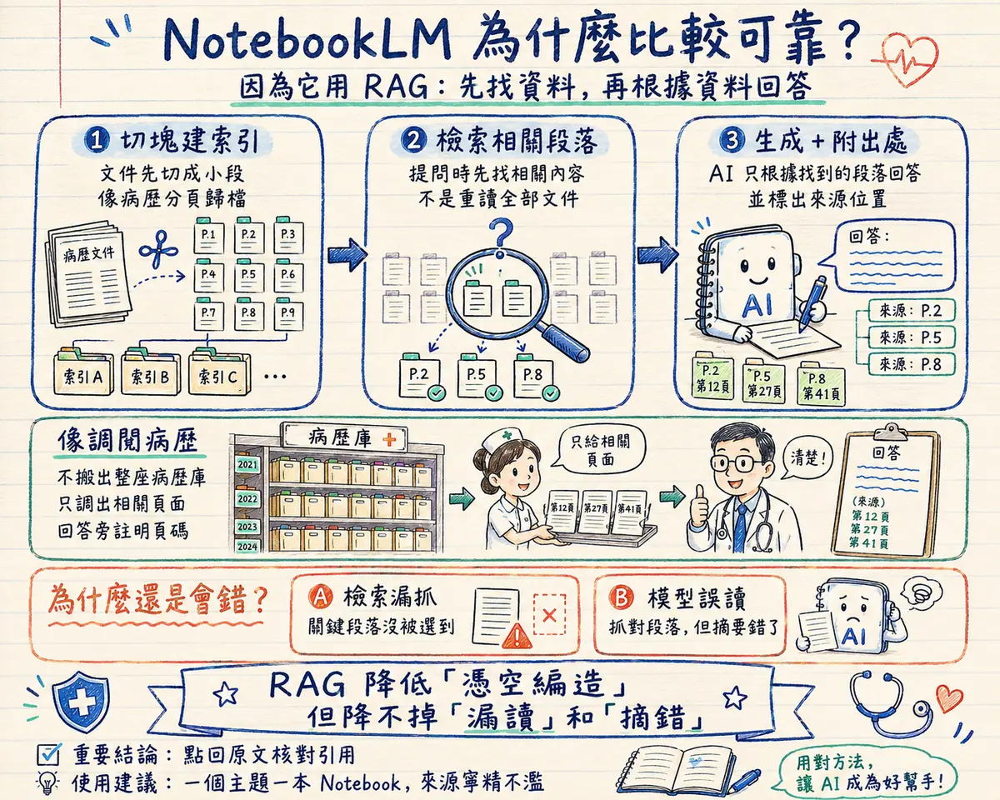
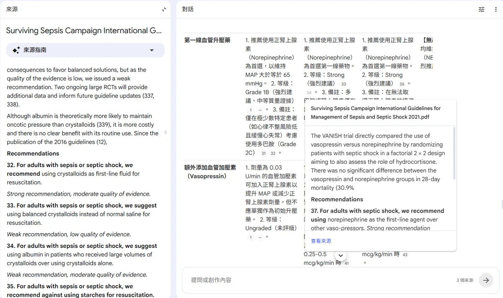
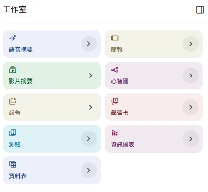
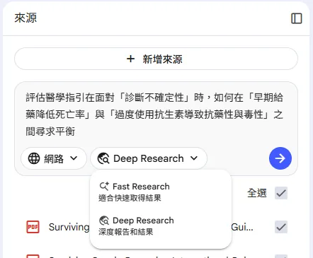
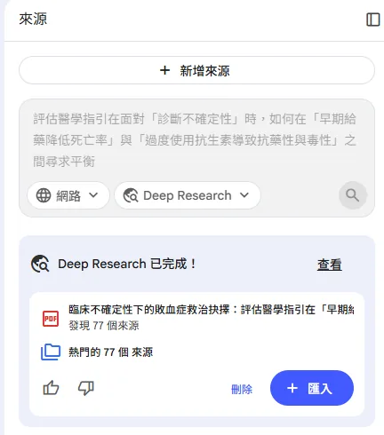
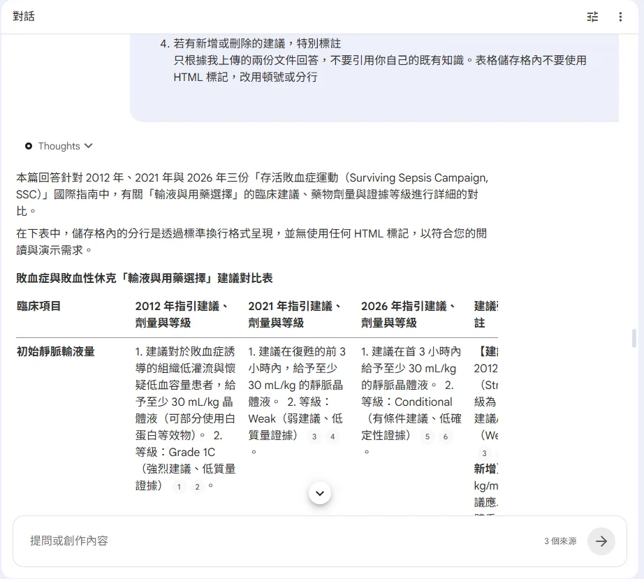

🔒 3 秒安全檢查
有沒有病人資料？會不會給病人看？我能不能負責？— 上傳文件前先過這三關，任何一題讓你猶豫，先回 Part 3 — AI 安全與隱私。
NotebookLM 是什麼
NotebookLM 是 Google 推出的「來源導向」AI 筆記工具。跟 ChatGPT、Gemini 這類一般對話式 AI 最大的不同在於：一般 AI 是憑訓練時記住的資料回答（可能過時、可能幻覺），NotebookLM 則是主要根據你上傳的來源回答，並附上出處連結，點下去就能跳回原文對應段落。注意「有出處」不等於「一定對」— 它仍可能漏讀、摘錯或引用不完整，重要數字和建議還是要點回原文核對。
上傳 PDF、網頁、YouTube 影片等，AI 以這些資料為回答依據，比一般聊天 AI 更不容易憑訓練記憶亂猜。
每個回答句子旁都有引用標記，點擊可以直接跳到來源文件的對應位置核對。
除了問答，還能把來源轉換成語音摘要、心智圖、簡報、測驗卡片等不同形式。
每個「Notebook」對應一個主題或專案，來源、筆記、產出都收在同一個地方。
背後原理 — RAG 檢索增強生成
NotebookLM 的底層核心是一種叫 RAG（Retrieval-Augmented Generation，檢索增強生成）的架構。理解它的運作方式，就能明白這個工具為什麼可靠、又為什麼仍然會出錯 — 後面「限制與注意」列的每一條，都是這個架構的自然結果。
你上傳的來源加總起來遠超過 AI 一次能讀的量（免費方案一本 Notebook 可放 50 個來源，每個來源上限約 50 萬字），所以它不可能每次回答都「重讀全部文件」。實際流程分三步：
上傳來源時，系統先把文件切成小段落並建立索引 — 就像病歷室把卷宗分頁歸檔，之後才找得快。
你提問時，系統先從索引中「檢索」出與問題最相關的段落，只把這幾段連同你的問題一起送給 AI 模型（Gemini）。
模型被明確指示「只能根據送進來的段落回答」，而且每個句子都要對應回來源的具體位置 — 這就是你點引用標記能跳回原文的原因，也是它比一般聊天 AI 少「憑空編造」的關鍵。
另外，NotebookLM 已把百萬 token 等級的長上下文開放給所有方案 — 來源不多的小型 Notebook（例如兩三份 guideline），可能整批直接讀入、不需要檢索篩選；來源越多，檢索環節的角色就越重，漏抓的風險也隨之增加。這也是「一個主題一本 Notebook、來源寧精不濫」的架構層理由。

免費額度與方案
📅 資訊更新於 2026 年 7 月 — 額度與方案名稱可能調整，以官方公告為準。
| 項目 | 免費方案 | 付費方案（Google AI Pro / Ultra） |
|---|---|---|
| Notebook 數量 | 約 100 本 | 更高上限 |
| 單一 Notebook 來源數 | 約 50 個 | 更高上限 |
| 語音摘要 / 影片摘要 | 每日各約 3 次 | 更高次數 |
| 每日提問次數 | 約 50 次 | 更高次數 |
| Deep Research（見下方進階功能） | 約每月 10 次 | 更高次數 |
基本操作
NotebookLM 的操作流程很簡單，四步驟就能開始：
登入 notebooklm.google.com，點「新增」建立一個新專案。建議一個主題或一次讀書會建一本，方便之後回頭找。
支援 PDF（guideline、paper）、Google Docs／Sheets、Google Drive 連結、網址、YouTube 影片連結、圖片、EPUB 電子書、純文字貼上等多種格式。同一本 Notebook 可以放多份來源，方便交叉比對。
在對話框直接用中文提問，AI 只根據已上傳的來源回答。問題越具體（例如指定比較哪幾份文件），答案越精準。
回答中每句話旁的引用標記可以點擊，直接跳到來源文件的對應段落。重要結論務必點回去看原文，不要只看 AI 摘要就下判斷。

產出功能
除了問答，NotebookLM 的「工作室（Studio）」面板可以把來源轉換成不同形式的產出，方便用不同方式消化同一批資料。目前面板提供這 9 種：
把來源轉成兩人對談形式的 podcast，適合通勤、運動時用聽的方式複習文獻重點。已支援繁體中文輸出，可在設定中切換語言。
把來源做成有旁白＋視覺畫面的影片解說，比純語音多了圖表與重點字卡，適合視覺型學習或分享給同事快速看懂。付費方案另有動畫更精緻的 Cinematic 版本（目前僅英文）。
把來源重點整理成投影片形式，適合快速生出晨會或科內報告的骨架。可對單張投影片提出修改意見重新生成，也能匯出 PPTX 檔，接續在 PowerPoint 裡編輯。
把來源的概念關係畫成可展開的心智圖，適合理解一份複雜 guideline 的整體架構與分支。
依來源產出結構化文件，如重點摘要、FAQ、時間軸、研讀指南等，適合當作讀書會或報告的底稿。
把內容轉成一問一答的字卡，翻牌自我檢測，適合背診斷準則、劑量、分類這類需要記憶的重點。可設定難度與張數，作答進度會保存，下次登入可接續複習。
根據來源自動出選擇題並附解析，讀完一份文獻後測一下自己是不是真的讀懂。
把重點濃縮成一張視覺化圖表，適合抓一份文件的核心數字與流程，或當社群衛教圖的草稿。提供十種預設視覺風格（手繪筆記、專業、科學插畫等）可挑選。
把來源裡的資訊整理成結構化表格（如各藥物比較、各研究對照），適合橫向比對多筆資料。

進階功能
基本問答之外，這幾個功能能明顯改變 NotebookLM 的使用方式，而且免費方案都能使用：
在來源面板選「Web」，輸入研究問題，AI 會擬定搜尋計畫、上網瀏覽並整理成一份附引用的研究報告，完成後可一鍵把報告與找到的網頁全部匯入 Notebook 當來源。另有 Fast Research 快速模式，適合簡單查找。免費方案有每月次數限制。
點對話框旁的設定圖示，用文字描述你希望 AI 扮演的角色與對話目標（例如「嚴格的審稿人」「口試模擬考官」），之後整本 Notebook 的問答都會照這個設定進行。所有方案皆可使用。
對話會自動保存且僅自己可見，下次開啟同一本 Notebook 可以接續先前的討論；也能把一段對話的結論直接轉成語音摘要或報告，不必重新提問一次。
NotebookLM 首頁有官方與合作機構（學者、期刊、出版社）策劃的公開筆記本，可直接開啟提問。適合觀摩專業團隊如何組織來源，也能訂閱有興趣的主題。


醫療應用情境
把新舊兩版 guideline 都上傳到同一本 Notebook，直接問 AI 兩版差異在哪裡，比自己逐條比對快很多。
把當週要討論的多篇 paper 全部上傳，讀書會前先用 NotebookLM 交叉提問，抓出各篇論點的異同，會議上討論更有效率。
把病例相關的文獻和 guideline 放進同一本 Notebook，用語音摘要或簡報功能快速抓重點，再手動整理成自己的報告架構。
接到不熟悉的主題（新藥、少見病原、跨科議題）時，先用 Deep Research 蒐集公開文獻與指引當起點，檢視並篩選來源品質後，再進入交叉提問。
把自己的稿件與引用文獻一起上傳，用「審稿人模式」的角色設定（見上方進階功能）讓 AI 先挑一輪毛病，投稿前補強最弱的段落。
把考試範圍的講義或 guideline 上傳，用學習卡與測驗功能自我檢測；進度會保存，可以分多天複習完一整份範圍。

限制與注意
這一節的每一條，都能從背後原理推出來 — 不是工具不成熟，而是 RAG 架構的固有特性。